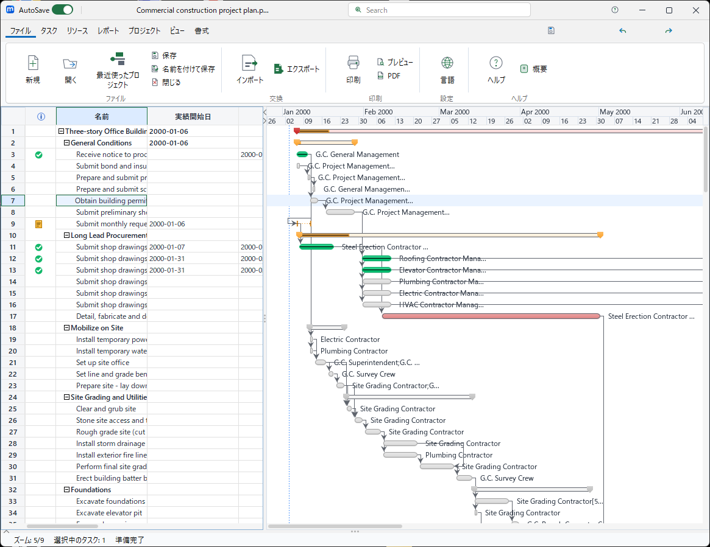

microProject は、Microsoft Project と互換性のあるデスクトップ型プロジェクト管理アプリケーションです。 WBS（ワーク・ブレークダウン・ストラクチャ）の作成、ガントチャートによるスケジュール管理、 リソースの割り当てと平準化、コスト管理、挣得値分析（EVM）など、 プロジェクトマネージャーに必要な主要機能を網羅しています。
| 形式 | 拡張子 | 説明 |
|---|---|---|
| microProject | .pod | 標準のローカル保存形式 |
| microProject 共同編集 | .podx | 共有フォルダーでの共同編集に対応するオープンコンテナー形式 |
| MS Project | .mpp | Microsoft Project ファイル（読み込み） |
| MS Project XML | .xml | Microsoft Project XML形式 |
| Planner | .planner | GNU Planner形式 |
| Excel | .xlsx | Microsoft Excel形式 |
.pdf | PDF出力（印刷プレビューから） | |
| CSV | .csv | カンマ区切りテキスト |
Windowsインストーラー（MSI）からインストールした場合、スタートメニューに「microProject」が追加されます。
ポータブル版の場合は、解凍したフォルダ内のmicroProject.exeをダブルクリックしてください。
テンプレート機能を使用すると、よく使うプロジェクト構造を素早く作成できます。 ファイル → 新規 → テンプレートから で選択してください。
.xml または .xlsx、通常の作業には .pod、共有編集には .podx として保存してください。
タスクを親子関係で整理します。
| 操作 | キーボード | リボン |
|---|---|---|
| インデント（子にする） | Alt+Shift+→ | タスク → インデント |
| アウトデント（親にする） | Alt+Shift+← | タスク → アウトデント |
| 操作 | キーボード |
|---|---|
| 上に移動 | Alt+Shift+↑ |
| 下に移動 | Alt+Shift+↓ |
タスク間の前後関係を定義します。
3FS）。
依存関係に遅れ（ラグ）や先行（リード）を設定できます。
例: 3FS+2d（3番目のタスクが完了してから2日後に開始）
期間がゼロのタスクは自動的にマイルストーン（ダイヤマーク）として表示されます。
タスクの期間を 0d に設定するか、マイルストーン属性を有効にしてください。
| 制約 | 説明 |
|---|---|
| できるだけ早く（ASAP） | デフォルト。スケジューラーが最適な開始日を決定 |
| できるだけ遅く（ALAP） | 最新の開始日でスケジューリング |
| 開始日以前に開始しない（SNET） | 指定日以前に開始しない |
| 開始日以前に終了しない（SNLT） | 指定日以前に終了しない |
| 終了日以前に開始しない（FNET） | 指定日以前に開始しない |
| 終了日以前に終了しない（FNLT） | 指定日以前に終了しない |
| 開始日以降に開始しない（MSO） | マイルストーンの開始制約 |
| 終了日以降に終了しない（MFO） | マイルストーンの終了制約 |
タスクに期限を設定すると、ガントチャート上に矢印で表示されます。 期限を超過してもスケジュールには影響しませんが、進捗状況の可視化に役立ちます。
定期的に発生するタスク（週次レビュー、月次報告など）を作成できます。 タスク → 繰り返しタスク で、周期（毎日/毎週/毎月/毎年）と範囲を設定します。
一度開始したタスクを一時停止し、後に再開できます。 ガントチャート上でタスクバーを分割位置までドラッグすると、タスクが分割されます。
表示 → リソースシート でリソースの一覧を表示します。 ここではリソースの名前、グループ、タイプ、標準レート、残業レートなどを管理します。
| タイプ | 説明 |
|---|---|
| 作業（Work） | 人的リソース。時間ベースでコストが計算されます |
| 材料（Material） | 消耗品。数量ベースでコストが計算されます |
| コスト（Cost） | 固定コスト追跡用。スケジュールに影響しません |
| 場所（Location） | 場所ベースのリソース |
| 機械（Machine） | 機材・設備リソース |
| その他（Other） | その他のリソース |
50%で半日作業各リソースには5つのコストレートテーブル（A〜E）を設定できます。 標準レート、残業レート、コスト/使用、有効日を管理します。
リソースの過剰割り当て（オーバーアロケーション）を自動的に解消します。 リソース → リソース平準化 で平準化設定を行います。
プロジェクト → 稼働時間の変更 で、プロジェクト・リソースごとのカレンダーを設定できます。 祝日、休日、例外日を定義して、正確なスケジューリングを行います。
タスクや依存関係を変更した後、Ctrl+R でスケジュールを再計算します。 通常は自動的に再計算されますが、手動で再計算が必要な場合があります。
タスクを「手動スケジューリング」に設定すると、スケジューラーによる自動変更を受けません。 未确定の計画や仮のスケジュールを保持するのに便利です。
プロジェクトの最短完了パス（クリティカルパス）が赤色で表示されます。 クリティカルパス上のタスクが遅延すると、プロジェクト全体の完了日が遅延します。
| タイプ | 説明 |
|---|---|
| 固定ユニット | リソースの割り当て率を維持し、期間や工数を調整 |
| 固定期間 | 期間を固定し、リソースの割り当て率や工数を調整 |
| 固定工数 | 工数を固定し、期間やリソースの割り当て率を調整 |
有効にすると、リソースの追加・削除時に工数が一定のまま、期間や割り当て率が自動調整されます。
デフォルトのビューです。左側にタスクリスト（スプレッドシート）、右側にタイムバーが表示されます。

ガントチャートの上部を右クリックしてタイムスケールを変更できます。 3段階（上位・中位・下位）の粒度を個別に設定できます。
| 操作 | キーボード/マウス |
|---|---|
| ズームイン | Ctrl+マウスホイールアップ / リボンのズームイン |
| ズームアウト | Ctrl+マウスホイールダウン / リボンのズームアウト |
| タスクにスクロール | 表示 → タスクにスクロール |
タスクバー内部に進捗率が黒いバーで表示されます。 タスクの「%完了」フィールドを編集すると自動的に更新されます。
表示 → 進捗ラインの切り替え で、今日の日付に進捗状況を表示する垂直線を切り替えます。 プロジェクトの進捗と計画の差を一目で確認できます。
カレンダーで定義された非稼働時間（休日、夜間など）がグレーで表示されます。
ガントチャート上でタスクバーを右クリックすると、コンテキストメニューから バースタイルや色を変更できます。
タスク表の「指標」列とガント領域は、タスクの状態、期間、関連を短時間で確認するための表示です。 表示色は進捗状況を表し、個別にバーの色を変更している場合はその設定が優先されます。
| 表示 | 意味 |
|---|---|
| 緑のチェック | タスクが完了（達成率 100%）です。添付画面では 3、11〜13 行目に表示されています。 |
| 黄色のメモ | タスクにメモが登録されています。アイコンにマウスを重ねると内容を確認できます。 |
| カレンダー | タスク固有の稼働カレンダーが割り当てられています。 |
| 制約アイコン | 開始日または終了日に制約が設定されています。 |
| 警告 | 期限超過、利用できないカレンダー、または無効なサブプロジェクトなど、確認が必要な状態です。 |
| 表示 | 意味 |
|---|---|
| 緑のバー | 完了したタスクです。バーの長さは予定期間、左右端は予定開始日と予定終了日を示します。 |
| オレンジのバー | 作業中のタスクです。進捗があるものの、まだ完了していません。 |
| 灰色のバー | 未着手のタスクです。 |
| 赤／ピンクのバー | クリティカルパス上のタスクです。遅れるとプロジェクト全体の完了日が遅れる可能性があります。 |
| 両端が下向きの記号になった太いバー | 要約タスクです。子タスク全体の開始日から終了日までを表し、色は要約タスクの進捗を示します。 |
| ひし形 | マイルストーンです。期間ゼロの重要な日付を示します。 |
| バー内の濃い帯 | タスクの達成率です。帯が右へ伸びるほど進捗が高いことを示します。 |
| 表示 | 意味 |
|---|---|
| タスク間を結ぶ濃い折れ線と矢印 | 依存関係です。矢印の向きが後続タスクを示します。線をたどると、どのタスクの完了・開始が次のタスクに影響するか確認できます。 |
| 青い縦の破線 | プロジェクト開始日です。添付画面では 2000 年 1 月 2 日の位置に表示されています。 |
| 紫の縦の点線 | ステータス日です。設定されている場合のみ表示され、進捗を評価する基準日になります。 |
| 細い格子線 | タイムスケールと行の区切りです。タスク間の関係を示す線ではありません。 |
クリティカルパスは、プロジェクトの開始から完了までを結ぶ依存関係のうち、遅れを吸収する余裕（総余裕時間／トータルスラック）がない、または非常に小さいタスクの連なりです。 この経路上のタスクが 1 日遅れると、ほかの条件が変わらない限りプロジェクト完了日も 1 日遅れます。
| 確認すること | 読み方・対応 |
|---|---|
| 赤／ピンクのバー | クリティカルパス上の候補です。まずこの色のタスクを確認し、前後の依存線をたどります。 |
| 総余裕時間が 0 | 完了日を遅らせずに動かせる余地がありません。開始遅れ、見積もり、リソース不足を優先的に確認します。 |
| 依存関係の矢印 | 前提タスクを早めても、後続タスクの制約・カレンダー・リソースが原因で完了日が変わらないことがあります。経路全体を確認します。 |
| 進捗とステータス日 | 計画上クリティカルでなくても、実績遅れによって新たにクリティカルになる場合があります。実績を更新してから再計算します。 |
リボンの 表示 タブから various ビューに切り替えられます。
| ビュー | 説明 |
|---|---|
| ガントチャート | タスクリストとタイムバーの標準ビュー |
| トラッキングガント | ベースラインと実績を比較表示 |
| タスク使用状況 | タスクごとのリソース使用量を時間単位で表示 |
| リソース使用状況 | リソースごとのタスク使用量を時間単位で表示 |
| ネットワーク図 | タスクの依存関係をネットワーク図で表示 |
| WBS | ワーク・ブレークダウン・ストラクチャを階層表示 |
| RBS | リソース・ブレークダウン・ストラクチャを階層表示 |
| リソースシート | リソースの一覧を管理 |
| カレンダー | カレンダーベビューでタスクを表示 |
| カスタムレポート | カスタムレポートを作成・表示 |
画面を上下に分割して、異なるビューを同時に表示できます。 例: 上部にガントチャート、下部にタスク使用状況を表示。
プロジェクト計画を確定したら、ベースライン（計画スナップショット）を保存します。 プロジェクト → ベースライン → ベースラインの設定
プロジェクト → タスクの更新 で、タスクの実績情報を一括入力します。 実績開始日、実績完了日、%完了、実績工数などを入力できます。
ステータス日を設定すると、その日までの実績が反映されます。 プロジェクト → ステータス日 で設定します。
表示 → トラッキングガント で、ベースラインバーと実績バーを比較表示します。 計画通りに進んでいるか、遅れているかが一目でわかります。
| フィールド | 説明 |
|---|---|
| コスト | 総コスト（工数 × レート） |
| 実績コスト | 完了済み作業のコスト |
| 残コスト | 未完了作業のコスト |
| ベースラインコスト | ベースライン保存時のコスト |
| 固定コスト | リソースに依存しない固定コスト |
プロジェクトのコスト・スケジュール効率を定量的に評価します。
| 指標 | 説明 |
|---|---|
| BCWS（PV） | 計画工数のコスト |
| BCWP（EV） | 実績工数のコスト |
| ACWP（AC） | 実績コスト |
| CPI | コスト効率指数（EV/AC）。1.0以上が良好 |
| SPI | スケジュール効率指数（EV/PV）。1.0以上が良好 |
| EAC | 完成時予想コスト |
| VAC | コストバリアンス予測 |
| TCPI | 残コスト効率指数 |
表示 → カスタムレポート で、表示するフィールドや条件を自由に定義したレポートを作成できます。
JFreeChartベースの各種チャートを表示できます。
| 操作 | フォーマット | メニュー |
|---|---|---|
| インポート | MS Project (.mpp / .mpx) | ファイル → 開く |
| インポート | MS Project XML (.xml) | ファイル → 開く |
| インポート | Excel (.xlsx) | ファイル → 開く |
| インポート | Planner (.planner) | ファイル → 開く |
| 保存 | microProject (.pod / .podx) | ファイル → 保存／名前を付けて保存 |
| エクスポート | MS Project XML (.xml) | ファイル → 名前を付けて保存 |
| エクスポート | Excel (.xlsx) | ファイル → 名前を付けて保存 |
Apache Commons CSV を使用した高品質なCSV出力に対応しています。 カスタムレポートやタスクリストをCSVにエクスポートできます。
| 操作 | キーボード | リボン |
|---|---|---|
| 元に戻す | Ctrl+Z | ホーム → 元に戻す |
| やり直し | Ctrl+Y | ホーム → やり直し |
microProjectは操作履歴を保持し、多くの操作を元に戻すことができます。
MS Project互換のキーボードショートカットをサポートしています。
| ショートカット | 操作 |
|---|---|
| Ctrl+N | 新規プロジェクト |
| Ctrl+O | ファイルを開く |
| Ctrl+S | 上書き保存 |
| Ctrl+P | 印刷 |
| Ctrl+Z | 元に戻す |
| Ctrl+Y | やり直し |
| ショートカット | 操作 |
|---|---|
| Ctrl+X | 切り取り |
| Ctrl+C | コピー |
| Ctrl+V | 貼り付け |
| Ctrl+D | 下にコピー（Fill Down） |
| Delete | 削除 |
| Insert | 新しいタスクを挿入 |
| F2 | セルを編集 |
| Ctrl+F | 検索 |
| F5 | 移動（Go To） |
| ショートカット | 操作 |
|---|---|
| Alt+Shift+→ | インデント（子にする） |
| Alt+Shift+← | アウトデント（親にする） |
| Alt+Shift+↑ | タスクを上に移動 |
| Alt+Shift+↓ | タスクを下に移動 |
| Alt+Shift+- | サブタスクを隠す |
| Alt+Shift+= | サブタスクを表示 |
| ショートカット | 操作 |
|---|---|
| Ctrl+Space | 行を選択 |
| Shift+Space | 列を選択 |
| Ctrl+Shift+Space | シート全体を選択 |
| Ctrl+- | 選択行を削除 |
| ショートカット | 操作 |
|---|---|
| Ctrl+F2 | タスクをリンク |
| Ctrl+Shift+F2 | タスクのリンク解除 |
| Shift+F2 | タスク/リソース情報 |
| ショートカット | 操作 |
|---|---|
| Ctrl+←/→ | ガントチャートをズーム |
| Ctrl+ホイール | ガントチャートをズーム（カーソル位置基準） |
画面下部のステータスバーには、現在のスケジュールモード（自動/手動）、 選択中のセル情報、計算状態などが表示されます。
列ヘッダーのオートフィルター機能を使用して、すばやくデータを絞り込みできます。 ドロップダウンから条件を選択するだけでフィルタリングできます。
タスクをダブルクリックすると、詳細なタスク情報を編集できるダイアログが表示されます。 通常、割り当て、リソース、 predecessors、制約、コストなどを一箇所で管理できます。
よく使うプロジェクト構造をテンプレートとして保存・再利用できます。 プロジェクトの大部分を定型化することで、新規作成時の作業を効率化します。
microProjectはローカルネットワーク上のプロジェクトファイル共有に対応しています。 複数のチームメンバーが同じプロジェクトファイルを同時に開いて作業できます。
表示 → テーマ で、アプリケーションの外観（Look and Feel）を変更できます。 FlatLaf テーマにより、モダンなUI体験が可能です。
-Xmx2g